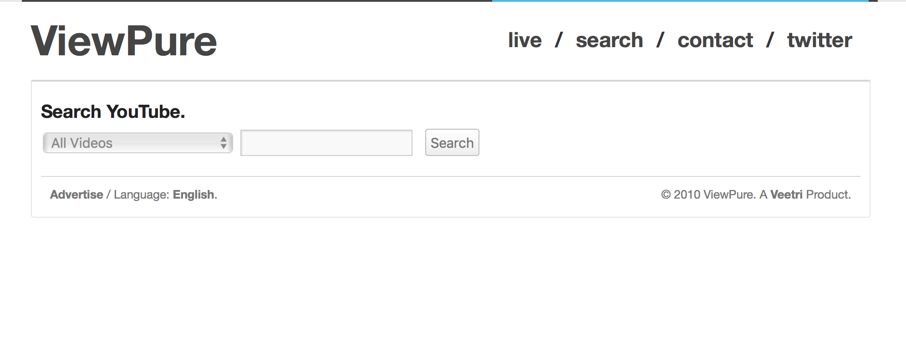
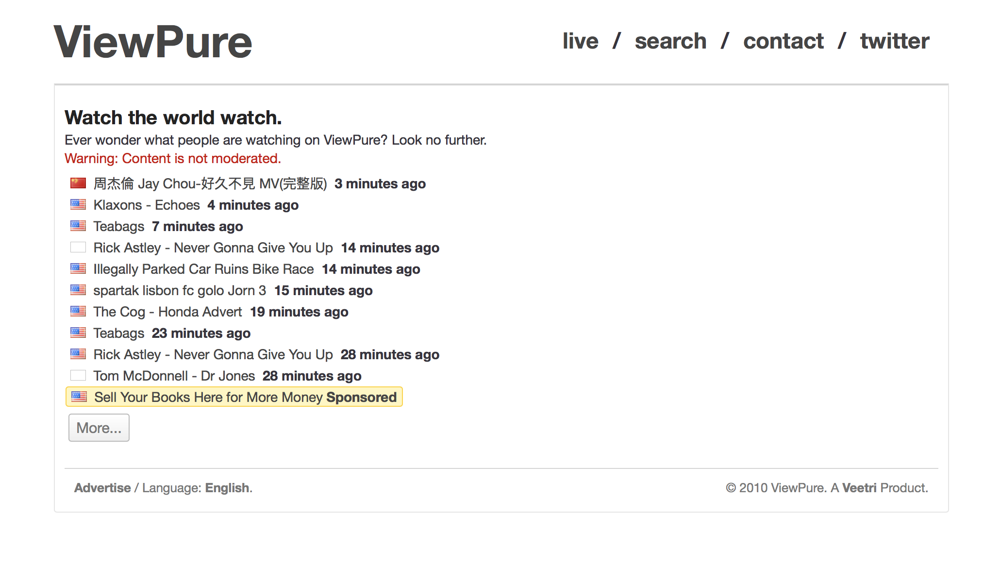

Research: was there even a need?
"Showing YouTube videos in a middle school classroom without repercussion" is a very, very specific goal. I wondered: did anyone else share this need? If not, did people need anything similar?
I spent a few weeks figuring this out, asking friends, teachers, adults, "internet friends" whom I had met over online forums I frequented at the time.
What don't you like about watching videos on YouTube? What would you change, if you could? Do you ever have trouble showing videos in classrooms / at work / to your pre-loss-of-innocence-aged kids?
As it turned out, people did desire such a tool. But the focus wasn't on the individual viewing experience: it was on the video sharing experience.
Brainstorm & prototype
I began jotting down ideas in my 70-page Mead notebook.
What did I want? Above all, I wanted to share videos without inappropriate content. Then I wanted the ability to customize the experience by, say, having a black background. Easily memorable custom URLs.
What did others want? A quick way to share and show videos, and in such a way that wouldn't add unneeded friction to their existing workflow.
I built out the first prototype in a few days on the then-in-vogue PHP & MySQL stack. It had these features:
- Drag-and-drop bookmarklet that would redirect users from the YouTube page to the "purified" version on ViewPure.
- Parallel URL structure such that changing the host of the YouTube URL would show the corresponding video on ViewPure (i.e. youtube.com/watch?v=_JmA2ClUvUY vs. viewpure.com/_JmA2ClUvUY).
- Simple text field on homepage that took a YouTube URL, automatically stripped out the ID, and generated the ViewPure-equivalent URL.
- Minimal onboarding instructions.
Yes, I recreated it, which explains 2018-style YT embed instead of Flash
Initial version
I released it sometime in March of 2010, installed Google Analytics for more granular user data collection and Clicky for live updates, posted it to a few subreddits and HackerRank type websites, and let it do its thing.
I didn't expect many users besides family members, myself, and perhaps a few internet strangers, so for the first few months I didn't really keep a close eye on the analytics.
Then in June of 2010 — I was with my family at the Tokyo Narita airport, waiting for our connection to Taipei — I suddenly started receiving downtime notifications.
I opened my Clicky analytics panel to see over 16,000 unique visitors in that day alone. It had been featured on a few technology blogs, and its popularity had skyrocketed.
Incorporate feedback
From that point on, I began scouring Reddit, Twitter, and education blogs for feature requests and implemented them on a rapid release cycle (I didn't call it that then; I just pushed an update whenever a feature was finished).
Features I later added:
- Dark mode gave the ability for users to watch with a dark background.
- Custom URLs were a popular requests (and the feature I personally used the most). It allowed users to create user-readable links such as viewpure.com/BabiesArguing.
- Start and end time that allowed users to create ViewPure links that had preset start and end times for videos (I realize, mid-writing, how self-explanatory this must be).
- Custom aspect ratios to allow users to switch between 16:9 and 4:3. This was in an era when YouTube videos were still oddly 4:3.
- Password protection, along with custom URLs, were the most requested features. It allowed users to lock a ViewPure page with a password (good for sharing custom links linking to unlisted YouTube videos).
After incorporating a lot of user-requested features
Capturing the full funnel: search
After a few months, I realized that ViewPure was most commonly used via the bookmarklet, meaning users still had to go to YouTube first beforehand in order to reach a purified version of the video.
This was problematic because some users would forget to search the video beforehand, and then, in the case of teachers, have to navigate (with great risk, might I add) the sea of YouTube search results where a innocuous search term such as "banana" could reveal the greatest depths of human depravity.
As a result, I implemented a barebones search functionality that allowed users to search straight from ViewPure.

Search page, without search results
This continued to be one of the most visited pages on ViewPure, and soon allowed for ViewPure to become more than just a video page, but a platform of sorts.
Adding delight: live feed
In addition to the search page, I added a fun "Live" page that would update with videos people were watching (with password-protected videos stripped out, of course). It didn't add a huge amount of utility, per se, but it made the website feel "alive," like there was activity constantly pulsing in the background.

Live feed that refreshed with videos people were currently watching
This was then monetized with relative success.
Panel to purchase advertisement slots on Live page
Major redesign & the omnibox
In 2014, I began working on a Version 2. My plans for the update were twofold: a rewrite of the existing codebase to be cleaner and more modular, and an overhaul of the design.
The focus of the redesign was hinged on the idea of the "omnibox", the "one text field to rule them all" approach that Chrome had adopted early on for its address bar. This pattern had become so popular that many (many) visitors to ViewPure were entering search terms instead of YouTube URLs, naturally leading them to error states.
It seemed clear to pivot to this "omnibox" approach: it was clean, effective, and, most importantly, simplified the UX without introducing a huge mental model shift for long-time ViewPure users.
In the final design, there is one single text field, enlarged for emphasis, and it takes both URLs and search texts. The query is passed through a regex comparison to see if it could be a YouTube URL, and if it is, a request is then made via the YouTube API to verify the video's existence. Otherwise, the user is forwarded to the ViewPure search results page.
Redesign of ViewPure in 2014, with the omnibox